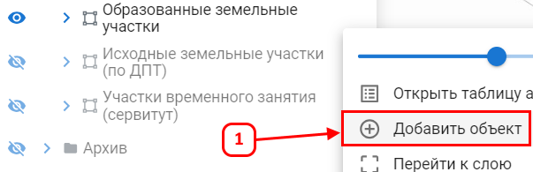
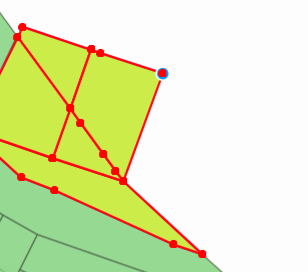
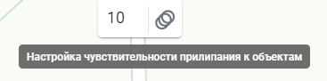

Создание объекта с помощью прилипания
Функция позволяет точно формировать геометрию объектов на карте, исключая расхождения, зазоры и ошибки в стыковке.
Для создания объекта без пересечений выполните следующие действия:
- Выделите один или несколько объектов на карте, к вершинам которых будет выполняться прилипание.
- Выберите слой, в котором необходимо создать новый объект.
- Нажмите Добавить объект (1).

- После активации функции вершины выбранных объектов подсветятся.

- Создавайте объект, перемещая курсор к подсвеченным вершинам. Точки нового объекта будут автоматически прилипать к ближайшим вершинам, где вы устанавливаете точку.
- Настройте чувствительность прилипания с помощью параметра Настройка чувствительности прилипания к объектам (2), расположенного в верхней панели. По умолчанию значение равно 10. Чем выше значение, тем раньше курсор начнет прилипать к вершине.

- После создания объекта сохраните его.
После сохранения объект будет создан в выбранном слое.